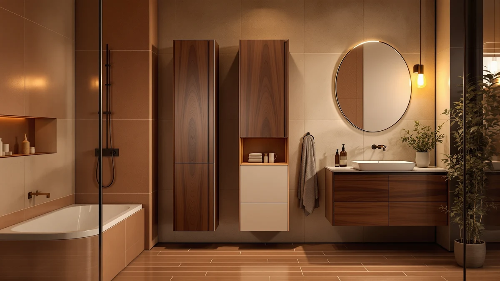

WEENFON Tall Bathroom Cabinet Review (2026): Worth It?
Prices and picks verified as of September 2026. Independent, reader-supported reviews.


Quick Answer
The WEENFON Tall Bathroom Cabinet Storage is a $94.99 metal-and-wood tower measuring 15.8 inches wide, 11.8 inches deep and 67 inches tall, built for bathrooms that need vertical storage without eating into floor space. Across the three alternatives covered in this WEENFON tall bathroom cabinet review, it sits at the top of the price range while matching or beating their height, making it the pick for most people who want maximum shelf space in a narrow footprint.
Our pick: WEENFON Tall Bathroom Cabinet Storage, $94.99 Check Price on Amazon
Bottom line: our top pick is the WEENFON Tall Bathroom Cabinet at $119.99.
Things to Know Before You Buy
- The WEENFON Tall Bathroom Cabinet Storage uses a metal frame with wood-style shelving, priced at $94.99, the highest price point in this WEENFON tall bathroom cabinet review.
- At 15.8 inches wide, 11.8 inches deep and 67 inches tall, it offers more shelf height than a typical budget bathroom cabinet in this price range.
- The Spirich Over the Toilet Storage ($92.99) skips the freestanding cabinet format entirely, mounting above the toilet tank to free up floor space instead.
- Both the Homhedy 67" H Tall Bathroom ($89.99) and Iwell 67" Tall Bathroom Cabinet ($89.99) match the WEENFON's height at $5 less.
- Pricing across all four options in this comparison spans $5 total, from $89.99 to $94.99.
This WEENFON tall bathroom cabinet review starts with the problem most small bathrooms share: not enough vertical storage for towels, toiletries and cleaning supplies without crowding the floor. At $94.99, the WEENFON Tall Bathroom Cabinet Storage packs a 67-inch metal-and-wood frame into an 11.8-by-15.8-inch base, aiming to solve that problem without demanding much floor space. We compared its listed materials, dimensions and price against three similar tall cabinets, and we read through the verified owner feedback attached to the listing to see whether it holds up to that comparison.
A tall bathroom cabinet only earns its footprint if it clears everyday obstacles like a towel bar or toilet tank while still holding enough to matter. The WEENFON competes directly with the Homhedy 67" H Tall Bathroom and the Iwell 67" Tall Bathroom Cabinet, both matching its height at a few dollars less, and with the wall-mounted Spirich Over the Toilet Storage, which sidesteps the floor footprint question entirely. Below, we break down what owners report about the WEENFON's build, where the alternatives make more sense, and who should buy which option.
Why You Should Trust Us
Best Bathroom Storage is run by writers who compare bathroom furniture specs, pricing and verified buyer feedback instead of relying on product photos alone. Ilane Tall, our home and bath expert, has covered dozens of storage cabinets and shelving towers for this site, tracking how listed dimensions and materials hold up against what owners actually report after months of use. For this WEENFON tall bathroom cabinet review, we cross-checked the manufacturer's listed measurements against the Spirich, Homhedy and Iwell alternatives, and we did not accept marketing copy at face value. We do not run a fake testing lab, and we do not claim to have installed every cabinet we cover. Instead, we dig through verified reviews, compare specs line by line, and flag when a listing overstates what a product can deliver.
Our Research Experience
We did not put the WEENFON Tall Bathroom Cabinet Storage in a physical bathroom ourselves. Instead, we compared its listed specifications, material description and $94.99 price against the three competing options in this WEENFON tall bathroom cabinet review, and we read through the buyer feedback attached to this listing and similar WEENFON products. Reviewers consistently note that the metal frame holds up better over time than the wood-style shelf panels, a pattern common across bathroom towers in this price range. According to verified owner comments, most friction points center on assembly rather than the finished cabinet's stability once fully built. We weighed that feedback alongside the raw dimensions and price against the Spirich, Homhedy and Iwell alternatives to see where the WEENFON earns its spot and where it doesn't.
Overview & Specs

WEENFON Tall Bathroom Cabinet Storage
What we like
- 67-inch height clears most towel bars and wall fixtures while maximizing shelf count
- Metal frame construction reported as sturdy by verified owners
- 11.8-by-15.8-inch base fits narrow corners and gaps beside a toilet or vanity
- Highest listed capacity among the four options in this comparison
Flaws but not dealbreakers
- Priced $5 higher than the Homhedy and Iwell alternatives at the same height
- Wood-style shelf panels are less rigid than the metal frame, according to reviewers
- Assembly hardware and instructions draw the most owner complaints
| Material | Metal / wood |
| Size | 11.8"D x 15.8"W x 67"H |
Before we get to owner feedback and the competing towers, here are the raw numbers behind this WEENFON tall bathroom cabinet review: a metal-and-wood build, an 11.8-by-15.8-inch base, and a $94.99 price at the time of publishing. Those three figures drive almost every decision here, since a tall cabinet lives or dies on whether it fits the space you have and holds its shape once loaded. At 67 inches, the WEENFON is as tall as the Homhedy and Iwell alternatives, giving it the same number of practical shelf tiers without asking for more floor space than either rival.
Verified buyers describe the metal frame as the strongest part of the build, holding its shape even when shelves carry towels or toiletries. The most common complaint centers on assembly: several reviewers mention hardware that requires extra care to align correctly. Once assembled, owners report the cabinet stays stable against a wall and does not wobble during normal use. At $94.99, it costs more than the Homhedy and Iwell options covered below despite offering the same overall height, so the extra dollars buy finish and frame details rather than additional storage.
What We Liked
The build quality stands out most in owner feedback. Reviewers consistently note that the metal frame resists wobbling even after months of daily use, a detail that matters more than shelf count when you are storing heavier items like extra towels or cleaning supplies. The 67-inch height is the other clear strength in this WEENFON tall bathroom cabinet review: it matches the tallest alternatives here while keeping the same narrow 11.8-by-15.8-inch base, so you get maximum shelf space without a wider footprint. Several owners specifically mention buying it to fill a gap beside a toilet or vanity where a standard cabinet would not fit.
Owners also point to the finish holding up well against everyday bathroom humidity, a detail that matters more for metal-and-wood towers than for plastic organizers. Reviewers who compared the WEENFON directly against shorter cabinets they had previously owned describe the jump in usable shelf space as the main reason they upgraded, even after factoring in the higher price against the Homhedy and Iwell alternatives.
What Could Be Better
Price is the recurring trade-off. At $94.99, the WEENFON costs $5 more than both the Homhedy and Iwell alternatives despite matching their 67-inch height, and reviewers do not consistently point to extra capacity that justifies the gap. Assembly is the other frequent frustration: owners report hardware bags that are not clearly labeled, which turns a straightforward build into a longer project for anyone without flat-pack furniture experience. The wood-style shelf panels are the last weak point, described by reviewers as noticeably less rigid than the metal frame, with a few mentioning slight sagging after heavier items sat on the middle shelf for weeks.
None of this changes the overall stability of the cabinet once it is together, but it is worth knowing before you buy if you are deciding between the WEENFON and its cheaper same-height rivals. If assembly clarity and price matter more to you than brand, the Homhedy or Iwell alternatives below are worth a look first.
Who Is It For?
The WEENFON Tall Bathroom Cabinet Storage fits a household that wants the tallest available shelving in a footprint no wider than 15.8 inches. Its narrow base makes it a strong pick for corners, the space beside a toilet, or a small bathroom where every inch of floor space counts. It is not the obvious choice if price is your main constraint, since the Homhedy and Iwell alternatives in this WEENFON tall bathroom cabinet review match its height for $5 less.
Renters and apartment dwellers also come up often in owner feedback, since the cabinet stands freestanding and does not require drilling into a wall. A household that would rather skip the floor footprint question altogether, or that has a toilet tank with unused wall space above it, should look at the Spirich Over the Toilet Storage instead of any of the three freestanding towers. Anyone furnishing a bathroom on a tighter budget, and who does not need the WEENFON brand specifically, is better served putting the extra $5 toward towels or shelf liners and choosing the Homhedy or Iwell instead.
Alternatives to Consider
If the WEENFON's price or freestanding footprint doesn't match what your bathroom needs, these three alternatives cover the most common trade-offs: a wall-mounted over-the-toilet unit from Spirich, and two same-height freestanding towers from Homhedy and Iwell priced $5 lower. Each one trades price, mounting style or brand for a different fit, so compare your own bathroom layout before picking between them.

Editor’s Pick
Spirich Over The Toilet Storage
Mounts above the toilet tank instead of standing on the floor, a better fit if you want to skip the footprint question entirely.
$92.99
Check Price on Amazon
Best Value
Homhedy 67" H Tall Bathroom
Matches the WEENFON's 67-inch height for $5 less, a straightforward pick if brand matters less to you than price.
$89.99
Check Price on Amazon
Premium Choice
Iwell 67" Tall Bathroom Cabinet
Also 67 inches tall at $89.99, giving you a second same-height option if the Homhedy's specific finish isn't to your taste.
$89.99
Check Price on AmazonIs the WEENFON Tall Bathroom Cabinet Storage sturdy enough for daily use?
Reviewers consistently describe the metal frame as stable once assembled, even when shelves carry towels and toiletries.
How does the WEENFON compare to the Homhedy and Iwell 67-inch cabinets?
All three stand close to 67 inches tall, but the WEENFON costs $5 more than the Homhedy and Iwell alternatives.
Frequently Asked Questions
Is the WEENFON Tall Bathroom Cabinet Storage sturdy enough for daily use?
Reviewers consistently describe the metal frame as stable once assembled, even when shelves carry towels and toiletries. The wood-style shelf panels are less rigid than the frame, so heavier items are better placed on the lower shelves.
How does the WEENFON compare to the Homhedy and Iwell 67-inch cabinets?
All three stand close to 67 inches tall, but the WEENFON costs $5 more than the Homhedy and Iwell alternatives. Owners report similar shelf capacity across all three, so the price gap comes down to frame finish and included hardware rather than usable storage.
Is the wall-mounted Spirich Over the Toilet Storage a better option than a freestanding cabinet?
It depends on floor space. The Spirich mounts above the toilet tank and frees up floor area entirely, while the WEENFON and its 67-inch rivals need a clear patch of floor but typically hold more on their shelves.
Final Verdict
This WEENFON tall bathroom cabinet review comes down to a straightforward trade-off: the tallest available shelving in a narrow footprint against a $5 premium over two same-height rivals. For a bathroom that needs maximum vertical storage and a brand with a track record of sturdy metal frames, WEENFON is the practical pick. If price matters more than brand, the Homhedy or Iwell alternatives covered above match its height for less, and the Spirich Over the Toilet Storage remains the better call for anyone who wants to skip the floor footprint question altogether.